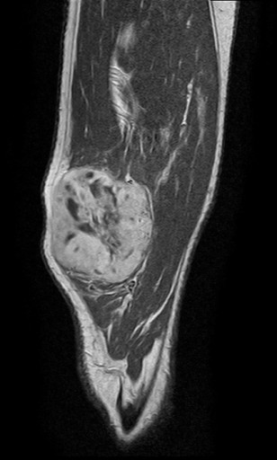

Por que sarcoma tem fama de tema impossível — e na prática se resolve com três perguntas de prova que se repetem sempre?
O tema que assusta sem motivo
O tema que todo mundo pula
Sarcoma é o assunto que se vai deixando de lado. Há câncer de pâncreas, de estômago, tanta coisa "maior" para estudar, que ele fica para depois — e nunca chega a vez. Aí cai na prova e dá branco. O paradoxo é que, sentado para estudar, é um dos temas mais fáceis da cirurgia: tem pouca coisa de verdade, e essa pouca coisa se repete.
Dois territórios, o mesmo nome
Sob o nome sarcoma cabem dois mundos que se comportam diferente. O sarcoma de partes moles — extremidades, tronco — que é o grosso. E o sarcoma de retroperitônio, que tem o mesmo histopatológico mas diagnóstico e tratamento totalmente diferentes: ele ganha capítulo próprio mais à frente. Reconhecer de qual dos dois a banca fala já muda toda a conduta.
As três perguntas que a banca repete
A prova de sarcoma de partes moles gira em torno de três perguntas, em ordem de frequência. Primeira: onde ele aparece (a localização). Segunda: qual o tipo histológico mais comum. Terceira: como se obtém o material para a histopatologia. Quem tem essas três respostas na ponta da língua acerta praticamente toda questão do tema — e cada uma ganha forma nas páginas a seguir.
O cartão teal do topo (Onde) é a pergunta mais frequente; abaixo vêm histologia e biópsia. Toque cada um para ver a resposta-âncora que a próxima página desenvolve.

Quiz — fixação
-
Em provas de sarcoma de partes moles, qual é a pergunta que mais aparece?
Gabarito: B. A localização é a pergunta nº 1 do tema, seguida pelo tipo histológico e pela técnica de biópsia. Classificação molecular (A) não é cobrada nesse nível — há mais de cem tipos histológicos, mas a prova só quer o mais comum. Esquema de quimio (C) não é o foco: o tratamento gira em torno da ressecção. Sobrevida em números (D) não é o padrão de cobrança aqui.
Por que cair na A ou na C: são iscas de quem imagina que oncologia "tem que" cobrar biologia molecular e protocolo de quimio — neste tema a banca é muito mais simples e estatística.
-
O sarcoma de partes moles e o sarcoma de retroperitônio compartilham o mesmo histopatológico, mas diferem totalmente em diagnóstico e tratamento.
Verdadeiro. É o eixo do tema: mesma linhagem histológica, condutas opostas — partes moles se biopsia e pode receber radioterapia; o retroperitônio não se biopsia e não recebe radioterapia. Marcar Falso ignora a distinção que define o capítulo do retroperitônio.
Por que o "Falso" engana: parece improvável que o mesmo tumor mude tanto de conduta só pela localização — mas é exatamente o que acontece entre o membro e a cavidade.